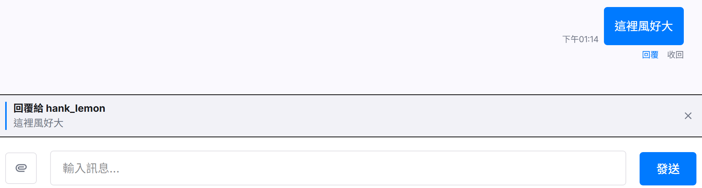
@成員名稱 的格式標記聊天室內的其他成員，也可 @everyone 一次標記所有成員，被標記的成員將在介面上獲得高亮顯示或特別通知。
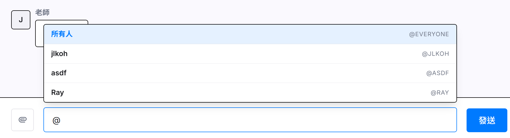
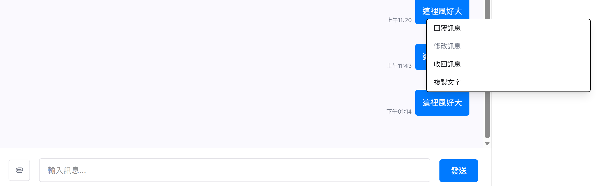

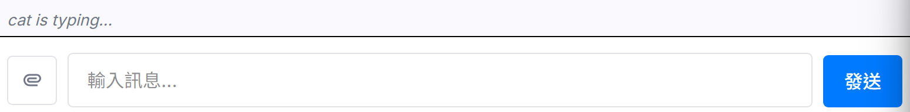
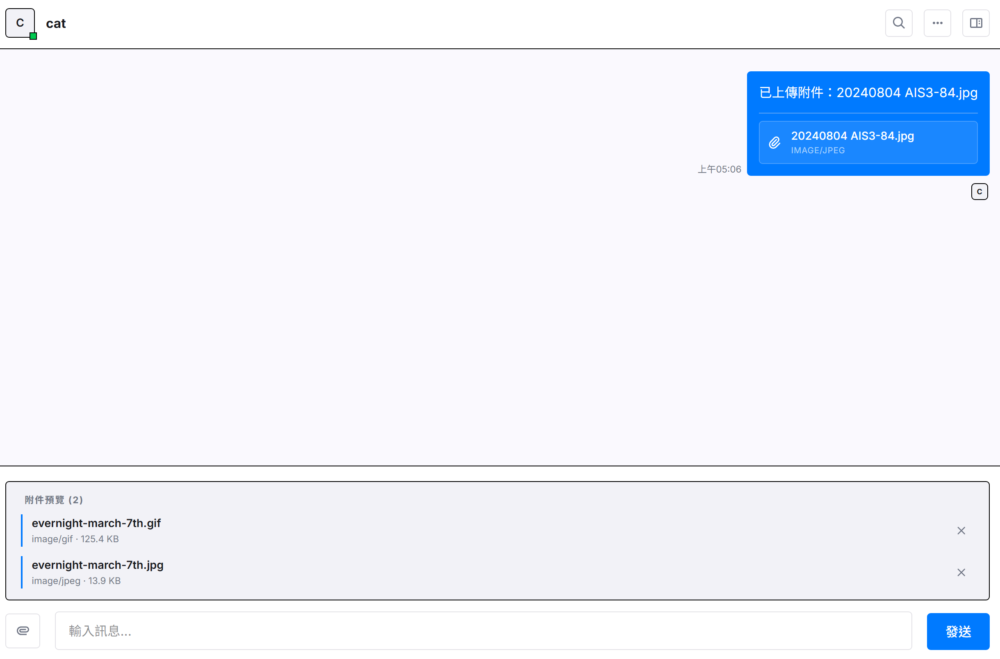
第 9 組 專題名稱：Near Chat 即時通訊系統 組員：江禹叡、楊銘煌、趙偉恆、姚承希
目前市面上的通訊軟體常呈現兩極化的發展：如 LINE、Messenger 等軟體雖然普及，但群組管理功能過於扁平簡單，缺乏精細的權限控管；而如 Discord 等軟體雖然權限完備，但多頻道伺服器的架構對一般使用者而言又過於龐大複雜。此外，隨著人口老化、獨居長者比例攀升，以及眾多青年學子與上班族隻身在外地求學工作，社會上對於「緊急狀態回報」與「自動聯絡」的需求日益增加。
CREATE TABLE users (
user_id UUID PRIMARY KEY DEFAULT gen_random_uuid(),
name VARCHAR(255) NOT NULL,
email VARCHAR(255) NOT NULL UNIQUE,
password_hash VARCHAR(255) NOT NULL,
bio TEXT,
avatar_url VARCHAR(2048),
warning_enabled BOOLEAN NOT NULL DEFAULT false,
warning_days INTEGER NOT NULL DEFAULT 0,
last_activity TIMESTAMPTZ NOT NULL DEFAULT NOW(),
created_at TIMESTAMPTZ NOT NULL DEFAULT NOW(),
deleted_at TIMESTAMPTZ DEFAULT NULL,
lang_preference VARCHAR(10) NOT NULL DEFAULT 'en',
app_theme VARCHAR(10) NOT NULL DEFAULT 'light' CHECK (app_theme IN ('light', 'dark')),
notify_desktop BOOLEAN NOT NULL DEFAULT true,
notify_sound BOOLEAN NOT NULL DEFAULT true,
room_order JSONB NOT NULL DEFAULT '{}'::jsonb,
demo_warning_enabled BOOLEAN NOT NULL DEFAULT false,
demo_warning_seconds INTEGER NOT NULL DEFAULT 30
);
CREATE TABLE chat_rooms (
room_id UUID PRIMARY KEY DEFAULT gen_random_uuid(),
type VARCHAR(10) NOT NULL CHECK (type IN ('private', 'group')),
name VARCHAR(255),
avatar_url VARCHAR(2048),
invite_code VARCHAR(255),
require_approval BOOLEAN NOT NULL DEFAULT false,
view_history BOOLEAN NOT NULL DEFAULT true,
is_archived BOOLEAN NOT NULL DEFAULT false,
created_at TIMESTAMPTZ NOT NULL DEFAULT NOW(),
is_readonly BOOLEAN NOT NULL DEFAULT false
);
CREATE UNIQUE INDEX chat_rooms_invite_code_unique
ON chat_rooms (invite_code)
WHERE invite_code IS NOT NULL;
CREATE TABLE messages (
message_id UUID PRIMARY KEY DEFAULT gen_random_uuid(),
room_id UUID NOT NULL REFERENCES chat_rooms(room_id) ON DELETE CASCADE,
sender_id UUID REFERENCES users(user_id) ON DELETE SET NULL,
content TEXT NOT NULL,
reply_to_id UUID REFERENCES messages(message_id) ON DELETE SET NULL,
is_recalled BOOLEAN NOT NULL DEFAULT false,
sent_at TIMESTAMPTZ NOT NULL DEFAULT NOW()
);
CREATE INDEX idx_messages_pagination
ON messages (room_id, sent_at DESC, message_id DESC);
CREATE TABLE attachments (
attachment_id UUID PRIMARY KEY DEFAULT gen_random_uuid(),
message_id UUID REFERENCES messages(message_id) ON DELETE CASCADE,
uploaded_by UUID REFERENCES users(user_id) ON DELETE SET NULL,
file_path VARCHAR(255) NOT NULL,
file_type VARCHAR(50) NOT NULL,
original_name VARCHAR(255) NOT NULL,
uploaded_at TIMESTAMPTZ NOT NULL DEFAULT NOW()
);
CREATE TABLE refresh_tokens (
token_id UUID PRIMARY KEY DEFAULT gen_random_uuid(),
user_id UUID NOT NULL REFERENCES users(user_id) ON DELETE CASCADE,
token_hash VARCHAR(255) NOT NULL UNIQUE,
expires_at TIMESTAMPTZ NOT NULL,
created_at TIMESTAMPTZ NOT NULL DEFAULT NOW(),
revoked_at TIMESTAMPTZ DEFAULT NULL,
replaced_by UUID REFERENCES refresh_tokens(token_id) ON DELETE SET NULL
);users 表新增個人設定與功能欄位：
lang_preference：儲存使用者介面語言選擇（預設為 'en'）。app_theme：限定為 'light' 或 'dark'，控制客戶端主題風格。notify_desktop 與 notify_sound：控制是否開啟桌面與聲音通知。room_order：以 postgreSQL 獨有 JSONB 格式儲存使用者自訂的聊天室拖曳排序結果。demo_warning_enabled 與 demo_warning_seconds：為求展示便利，設計了以「秒」為單位的緊急聯絡不活躍觸發機制。refresh_tokens 表：
token_hash）與過期時間（expires_at）。revoked_at (作廢時間) 與 replaced_by (替換 Token ID)，以支援 Token 輪轉機制 (Token Rotation) 與重放攻擊偵測 (Reuse Detection)。CREATE TABLE room_members (
room_id UUID NOT NULL REFERENCES chat_rooms(room_id) ON DELETE CASCADE,
user_id UUID NOT NULL REFERENCES users(user_id) ON DELETE CASCADE,
role VARCHAR(10) NOT NULL CHECK (role IN ('owner', 'admin', 'member', 'pending')),
nickname VARCHAR(255),
is_muted BOOLEAN NOT NULL DEFAULT false,
last_read_id UUID REFERENCES messages(message_id) ON DELETE SET NULL,
join_time TIMESTAMPTZ NOT NULL DEFAULT NOW(),
PRIMARY KEY (room_id, user_id)
);
CREATE TABLE friendships (
requester_id UUID NOT NULL REFERENCES users(user_id) ON DELETE CASCADE,
addressee_id UUID NOT NULL REFERENCES users(user_id) ON DELETE CASCADE,
status VARCHAR(20) NOT NULL CHECK (status IN ('pending', 'accepted')),
created_at TIMESTAMPTZ NOT NULL DEFAULT NOW(),
PRIMARY KEY (requester_id, addressee_id),
CONSTRAINT friendships_no_self_friendship CHECK (requester_id <> addressee_id)
);
CREATE TABLE blocks (
blocker_id UUID NOT NULL REFERENCES users(user_id) ON DELETE CASCADE,
blocked_id UUID NOT NULL REFERENCES users(user_id) ON DELETE CASCADE,
created_at TIMESTAMPTZ NOT NULL DEFAULT NOW(),
PRIMARY KEY (blocker_id, blocked_id),
CONSTRAINT blocks_no_self_block CHECK (blocker_id <> blocked_id)
);
CREATE TABLE folders (
folder_id UUID PRIMARY KEY DEFAULT gen_random_uuid(),
user_id UUID NOT NULL REFERENCES users(user_id) ON DELETE CASCADE,
name VARCHAR(50) NOT NULL,
created_at TIMESTAMPTZ NOT NULL DEFAULT NOW()
);
CREATE TABLE folder_rooms (
folder_id UUID NOT NULL REFERENCES folders(folder_id) ON DELETE CASCADE,
room_id UUID NOT NULL REFERENCES chat_rooms(room_id) ON DELETE CASCADE,
user_id UUID NOT NULL REFERENCES users(user_id) ON DELETE CASCADE,
PRIMARY KEY (folder_id, room_id),
UNIQUE (user_id, room_id)
);
CREATE TABLE emergency_contacts (
user_id UUID NOT NULL REFERENCES users(user_id) ON DELETE CASCADE,
contact_id UUID NOT NULL REFERENCES users(user_id) ON DELETE CASCADE,
message TEXT NOT NULL,
created_at TIMESTAMPTZ NOT NULL DEFAULT NOW(),
PRIMARY KEY (user_id, contact_id),
CONSTRAINT emergency_contacts_no_self_contact CHECK (user_id <> contact_id)
);
CREATE TABLE message_mentions (
message_id UUID NOT NULL REFERENCES messages(message_id) ON DELETE CASCADE,
user_id UUID NOT NULL REFERENCES users(user_id) ON DELETE CASCADE,
PRIMARY KEY (message_id, user_id)
);
CREATE TABLE emergency_alert_logs (
user_id UUID NOT NULL REFERENCES users(user_id) ON DELETE CASCADE,
last_activity_at TIMESTAMPTZ NOT NULL,
alerted_at TIMESTAMPTZ NOT NULL DEFAULT NOW(),
PRIMARY KEY (user_id, last_activity_at)
);
一、安裝 Docker Compose
二、設定 .env（所有必填值已列於 .env.example）
三、啟動服務
docker compose up -d
docker compose -f docker-compose.prod.yml up -d
本專案的 github 儲存庫連結為 https://github.com/minstrike520/1142-ntnu-db-app 可使用 git 下載至本地
git clone https://github.com/minstrike520/1142-ntnu-db-app.git
cd 1142-ntnu-db-app請根據您的作業系統安裝對應的 Docker 軟體：
docker --version
docker compose versionsudo apt-get update
sudo apt-get install docker.io docker-compose-v2 -ysudo（設定完成後需重新登入使之生效）：
sudo usermod -aG docker $USERdocker --version
docker compose version系統需要一組環境變數來配置資料庫連接、金鑰與通訊連接埠。請在專案根目錄下完成以下設定：
cp .env.example .env.env.example 並命名為 .env；或者在 PowerShell 中執行：
Copy-Item .env.example .env打開 .env 檔案修改其中變數值，以下為關鍵設定說明：
NODE_ENV：設為 development（開發模式）或 production（生產模式）。POSTGRES_USER、POSTGRES_PASSWORD、POSTGRES_DB：分別為資料庫的使用者名稱、密碼與資料庫名稱。DATABASE_URL：連線字串。由於在容器內運行，主機名稱請保持為 db，例如：postgresql://chatuser:chatpassword@db:5432/chatdb。JWT_SECRET：用於簽署 JWT Token 的隨機金鑰（開發環境可使用預設值，生產環境務必修改）。NEXT_PUBLIC_API_URL：前端瀏覽器端呼叫後端 API 的外部 URL。在本機開發時，Docker 將後端連接埠映射至外部的 4005，故設為 http://localhost:4005。UPLOADS_MOUNT_SOURCE)：
app_uploads。C:/chat-uploads
/Users/yourname/chat-uploads
開發模式會掛載本地程式碼至容器內，當您修改程式碼時，服務會自動重啟，便於偵錯與開發。
docker compose up -d --builddocker compose exec backend pnpm run db:seedpassword123），如 alice@test.com、bob@test.com 等。
localhost:5435
docker compose ps
docker compose logs -f backend
docker compose down
生產模式下，Docker 會預先編譯前端的 Next.js 靜態頁面與後端的 TypeScript，以優化執行效能並加強安全性，同時也支援部署 Cloudflare Tunnel 來對外提供公開服務。
docker-compose.prod.yml 啟動：
docker compose -f docker-compose.prod.yml up -d --builddocker compose -f docker-compose.prod.yml exec backend pnpm run migrate:up.env 中設定 TUNNEL_TOKEN，生產環境的 tunnel 服務將會自動連線並將您的系統公開至 Cloudflare 網域上。docker compose -f docker-compose.prod.yml down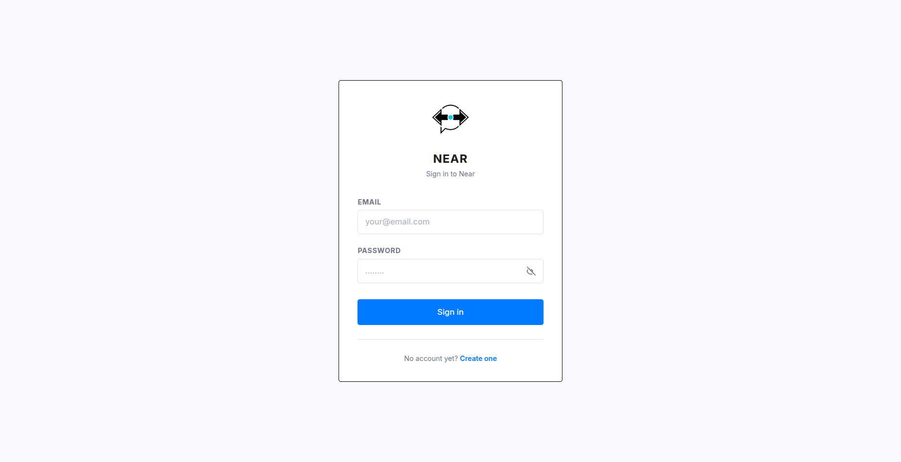
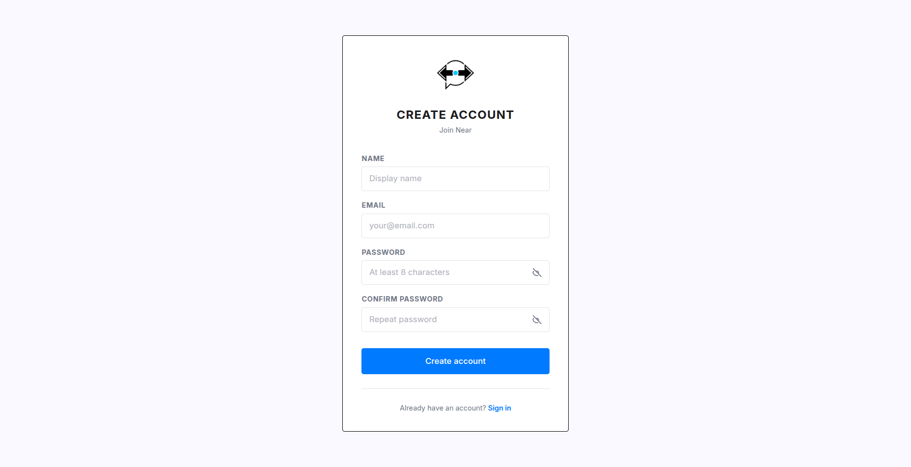
登入後會進到聊天室的頁面
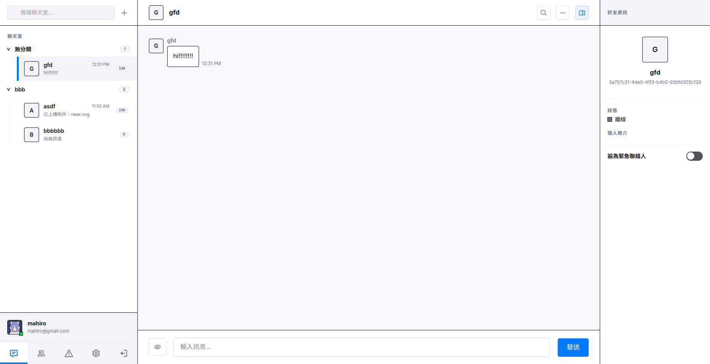
按下右上方聊天是搜尋欄旁的 + 按鈕，會跳出一個視窗，選擇建立群組、加入群組或建立資料夾
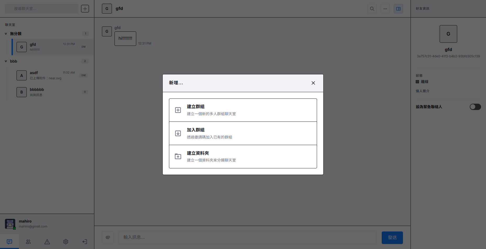

@成員名稱 的格式標記聊天室內的其他成員，也可 @everyone 一次標記所有成員，被標記的成員將在介面上獲得高亮顯示或特別通知。




群組建立後可到設定中設定群組圖示、名稱，還有其他設定如加入審核，還有邀請碼可用於邀請其他使用者

下面是成員管理及身份設定，群組有三種身份等級：擁有者、管理員、一般成員，各自具備不同的操作與管理權限，可在下方查看各種等級的權限說明。

在聊天室列表中可以建立資料夾，在搜尋欄旁的 + 按鈕按下後選擇建立資料夾。 建立後可拖曳聊天室將其他入資料夾中，對資料夾按右鍵可選擇修改資料夾名稱或刪除資料夾。
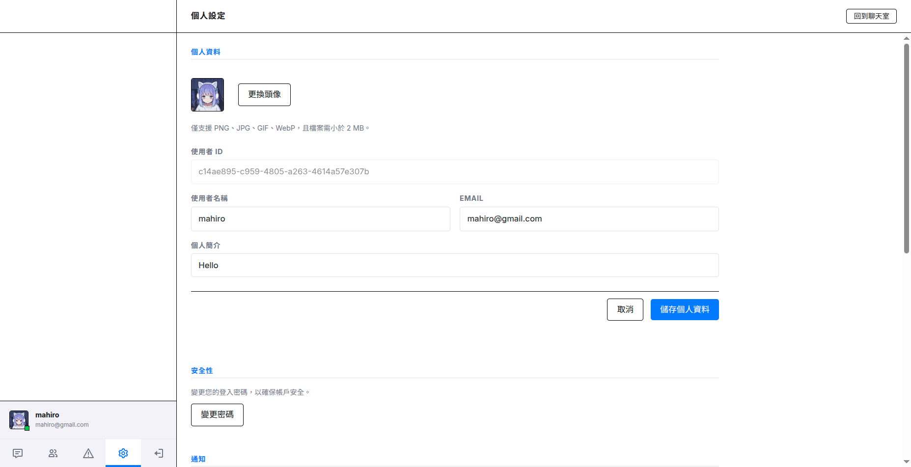
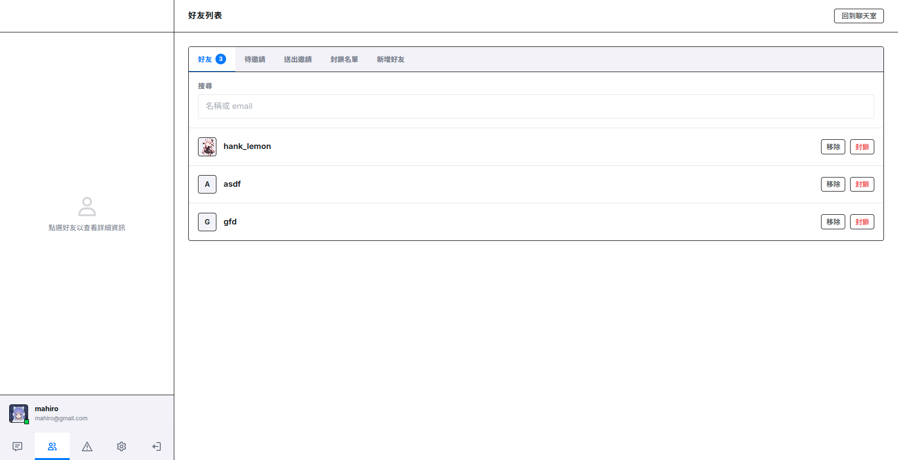
在新增好友界面中，可使用使用者名稱、email、使用者 ID 搜尋，送出邀請後對方可以在待邀請中選擇接受或拒絕。
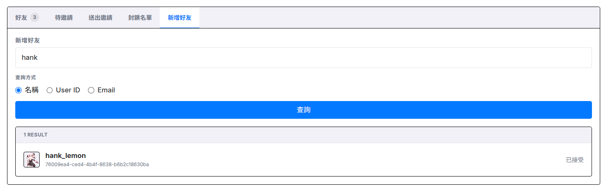
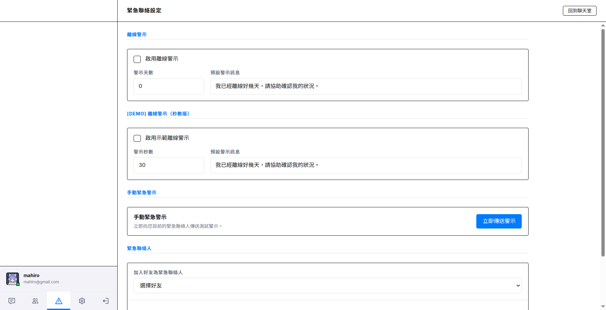
flowchart TD
Start([開始]) --> RegInput[輸入名稱、信箱、密碼與確認密碼]
RegInput --> RegValid{格式與密碼一致性驗證}
RegValid -- 失敗 --> RegErr[提示錯誤訊息] --> RegInput
RegValid -- 成功 --> CheckEmailExist{信箱是否已被註冊？}
CheckEmailExist -- 是 --> RegErr
CheckEmailExist -- 否 --> Bcrypt[密碼進行 bcrypt 加密]
Bcrypt --> DBInsertUser[(寫入 users 資料表)]
DBInsertUser --> RegSuccess[註冊成功並自動登入]
RegSuccess --> GenTokens[產生短期 Access Token 與隨機 Refresh Token]
GenTokens --> DBInsertRefresh[(寫入 refresh_tokens 資料表儲存 Token 雜湊)]
DBInsertRefresh --> SetCookie[設定 HttpOnly Cookie 儲存 Refresh Token]
SetCookie --> RedirectMain[跳轉至主對話介面並回傳 Access Token]
RedirectMain --> End([結束]) flowchart TD
Start([開始]) --> LoginInput[輸入信箱與密碼]
LoginInput --> CheckUser{帳號是否存在且未被刪除？}
CheckUser -- 否 --> LoginErr[提示信箱或密碼錯誤] --> LoginInput
CheckUser -- 是 --> VerifyHash{比對密碼雜湊}
VerifyHash -- 失敗 --> LoginErr
VerifyHash -- 成功 --> UpdateActivity[(更新 last_activity 時間)]
UpdateActivity --> GenTokens[產生短期 Access Token 與隨機 Refresh Token]
GenTokens --> DBInsertRefresh[(寫入 refresh_tokens 資料表儲存 Token 雜湊)]
DBInsertRefresh --> SetCookie[設定 HttpOnly Cookie 儲存 Refresh Token]
SetCookie --> RedirectMain[跳轉至主對話介面並回傳 Access Token]
RedirectMain --> End([結束])flowchart TD
Start([開始]) --> ReqRefresh[發送重新整理請求]
ReqRefresh --> ReadCookie{從 Cookie 讀取 Refresh Token？}
ReadCookie -- 否/不存在 --> FailErr[提示 Missing Refresh Token] --> EndFail([結束])
ReadCookie -- 是/存在 --> HashToken[對 Token 進行 SHA256 雜湊]
HashToken --> DBGetToken{查詢 refresh_tokens 資料表}
DBGetToken -- 不存在 --> InvalidErr[提示 Invalid Refresh Token] --> EndFail
DBGetToken -- 存在 --> CheckRevoked{是否已被作廢？}
CheckRevoked -- 是 --> CheckReused{是否有 replaced_by 關聯（重用）？}
CheckReused -- 是/偵測到重用 --> RevokeAll[(作廢該用戶名下所有 Refresh Token)] --> ReplayErr[提示安全風險並強制登出] --> ClearCookie[清除 Cookie 中的 Refresh Token] --> EndFail
CheckReused -- 否 --> RevokedErr[提示 Token 已作廢] --> ClearCookie --> EndFail
CheckRevoked -- 否 --> CheckExpired{是否已過期？}
CheckExpired -- 是 --> ExpiredErr[提示 Token 已過期] --> ClearCookie --> EndFail
CheckExpired -- 否 --> CheckUser{用戶是否存在且未被刪除？}
CheckUser -- 否 --> UserErr[提示用戶狀態無效] --> EndFail
CheckUser -- 是 --> GenNewTokens[產生新 Access Token 與新 Refresh Token]
GenNewTokens --> RotateToken[(執行 Token 輪轉：舊的標記作廢並關聯新 ID，寫入新 Token)]
RotateToken --> SetNewCookie[設定 HttpOnly Cookie 儲存新 Refresh Token]
SetNewCookie --> RespSuccess[回傳新 Access Token] --> EndSuccess([結束])flowchart TD
Start([開始]) --> ReqLogout[發送登出請求]
ReqLogout --> ReadCookie{從 Cookie 讀取 Refresh Token？}
ReadCookie -- 否/不存在 --> ClearCookie[清除 Cookie] --> End([結束])
ReadCookie -- 是/存在 --> HashToken[對 Token 進行 SHA256 雜湊]
HashToken --> DBGetToken{查詢 refresh_tokens 資料表}
DBGetToken -- 存在 --> RevokeToken[(作廢該筆 Refresh Token 記錄)] --> ClearCookie
DBGetToken -- 不存在 --> ClearCookieflowchart TD
Start([開始]) --> CheckSelf{是否為自己？}
CheckSelf -- 是 --> FailMsg[拒絕操作並報錯]
CheckSelf -- 否 --> CheckBlocked{雙方是否存在封鎖關係？}
CheckBlocked -- 是 --> FailMsg
CheckBlocked -- 否 --> CheckPending{是否已有 pending 或 accepted 關係？}
CheckPending -- 是 --> FailMsg
CheckPending -- 否 --> InsertFriend[(寫入 friendships, status='pending')]
InsertFriend --> NotifyUser[透過 Socket 發送好友邀請通知] --> End([結束])flowchart TD
Start([開始]) --> AcceptOrReject{接受或拒絕？}
AcceptOrReject -- 接受 --> UpdateFriendAccepted[(更新 friendships 為 accepted)]
UpdateFriendAccepted --> FindPrivateRoom{是否已有既有私聊？}
FindPrivateRoom -- 是 --> ReturnExistingRoom[回傳既有 private room]
FindPrivateRoom -- 否 --> CreatePrivateRoom[(建立 private chat_rooms)]
CreatePrivateRoom --> InsertRoomMembers[(寫入雙方 room_members)]
ReturnExistingRoom --> End([結束])
InsertRoomMembers --> End
AcceptOrReject -- 拒絕 --> DeletePending[(刪除 pending 好友邀請)] --> Endflowchart TD
Start([開始]) --> InsertBlock[(寫入 blocks)]
InsertBlock --> SetRoomReadonly[若存在私聊則設為 is_readonly=true]
SetRoomReadonly --> End([結束])flowchart TD
Start([開始]) --> CreateGroupRoom[(寫入 chat_rooms, type='group')]
CreateGroupRoom --> InsertOwnerMember[(寫入 room_members, role='owner')]
InsertOwnerMember --> InitFolder{是否加入資料夾？}
InitFolder -- 是 --> GroupFolderMapping[(寫入 folder_rooms)] --> End([結束])
InitFolder -- 否 --> End([結束])flowchart TD
Start([開始]) --> ReviewNeeded{是否需審核？}
ReviewNeeded -- 是 --> InsertPending[(寫入 room_members, role='pending')] --> End([結束])
ReviewNeeded -- 否 --> InsertNewMember[(寫入 room_members, role='member')] --> End([結束])flowchart TD
Start([開始]) --> CheckRole{成員角色}
CheckRole -- 一般成員或管理員 --> DeleteMember[(刪除 room_members)] --> End([結束])
CheckRole -- 擁有者 --> NeedTransfer[需先轉移 ownership]
NeedTransfer --> TransferFlow[指定新 owner]
TransferFlow --> DBUpdateOwner[(更新舊 owner 為 member, 新 owner 為 owner)]
DBUpdateOwner --> DeleteMemberflowchart TD
Start([開始]) --> ArchiveRoom[(更新 chat_rooms.is_archived=true)]
ArchiveRoom --> End([結束])flowchart TD
Start([開始]) --> JoinRoom[客戶端送出 join_room]
JoinRoom --> CheckMembership{是否為房間成員？}
CheckMembership -- 否 --> ErrorJoin[回傳 error 事件] --> EndJoin([結束])
CheckMembership -- 是 --> Subscribed[加入 room_roomId 頻道]
Subscribed --> MsgInput[輸入訊息內容、replyTo 與 attachmentIds]
MsgInput --> CheckRoomState{聊天室是否可發言？}
CheckRoomState -- 否 --> ErrorDeny[回傳 403 或 error] --> EndDeny([結束])
CheckRoomState -- 是 --> CheckMuted{是否被禁言？}
CheckMuted -- 是 --> ErrorDeny
CheckMuted -- 否 --> ValidateAttachments{附件是否存在且可綁定？}
ValidateAttachments -- 否 --> ErrorDeny
ValidateAttachments -- 是 --> InsertMsg[(寫入 messages)]
InsertMsg --> BindAttachments[(更新 attachments.message_id)]
BindAttachments --> ParseMentions{是否有 @提及？}
ParseMentions -- 是 --> ResolveUsers[解析聊天室內使用者]
ResolveUsers --> InsertMentions[(寫入 message_mentions)]
ResolveUsers --> EmitRealtime[透過 Socket.io 廣播給其他成員]
ParseMentions -- 否 --> EmitRealtime
EmitRealtime --> EndSuccess([結束])flowchart TD
Start([開始]) --> ReceiversRead[其他成員閱讀訊息]
ReceiversRead --> EmitReadReceipt[客戶端送出已讀回應]
EmitReadReceipt --> CheckMsgRoom{messageId 是否屬於該 roomId？}
CheckMsgRoom -- 否 --> IgnoreReceipt[拒絕更新並回傳 error] --> EndFail([結束])
CheckMsgRoom -- 是 --> DBUpdateRead[(更新 room_members.last_read_id)]
DBUpdateRead --> EmitReadUpdate[廣播 read_update] --> EndSuccess([結束]) flowchart TD
Start([啟動排程或手動檢查]) --> GetActiveUsers[查詢 warning_enabled=true 且 warning_days > 0 的 User]
GetActiveUsers --> LoopUsers{逐一檢查 User}
LoopUsers -- 結束 --> End([結束])
LoopUsers -- 尚有使用者 --> CheckInactivity{現在時間 - last_activity > warning_days？}
CheckInactivity -- 否 --> LoopUsers
CheckInactivity -- 是 --> CheckAlreadyAlerted{同一 last_activity 是否已通知過？}
CheckAlreadyAlerted -- 是 --> LoopUsers
CheckAlreadyAlerted -- 否 --> FetchContacts[查詢 emergency_contacts]
FetchContacts --> LoopContacts{逐一通知聯絡人}
LoopContacts -- 有聯絡人 --> SendAlert[發送訊息通知]
SendAlert --> LoopContacts
LoopContacts -- 結束 --> InsertLog[(寫入 emergency_alert_logs)] --> LoopUsers採用容器化開發，將系統劃分為前端、後端與資料庫，並以 Docker Compose 進行本機與部署的統籌管理。
Docker Compose 來統籌並連接三個主要容器服務：db、backend以及 frontend。.env 檔中統一宣告，由 Docker Compose 自動注入各個容器，確保開發與生產環境設定分離。Next.js 框架開發。ChatContext) 管理全域對話狀態與認證狀態；即時連線方面使用 socket.io-client 處理 WebSocket 即時事件。Node.js、Express 與 TypeScript 建立 RESTful API 伺服器，並搭載 Socket.IO 實作實時雙向事件發送。Routes -> Controllers -> Services -> Repositories 分層設計。
users 與 refresh_tokens 等表）。JSON Web Token (JWT)，密碼加密採用 bcryptjs 進行高安全性單向雜湊。HttpOnly 與 Secure 屬性，防止 XSS 攻擊讀取。replaced_by 與 revoked_at 記錄關聯，主動作廢該用戶名下所有的 Refresh Token，強制所有裝置登出以確保安全性。PostgreSQL 作為系統的主要關聯式資料庫。pg 客戶端連線池 (pg.Pool) 直接對資料庫下達參數化 SQL 查詢指令，確保最優化且安全的 SQL 語法執行速度。node-pg-migrate 管理資料庫結構版本，以 SQL Migration 腳本形式紀錄資料表的每一次結構變動。本專案已完成原先規劃的大部分核心功能，包含但不侷限於：
目前系統已可提供私訊、群組聊天、好友互動與緊急聯絡等主要功能，形成一套可透過 Docker Compose 快速部署的完整系統。
仍有一些界面與操作體驗的小細節可以優化改進
未來可進行較大改動的部份：
在這一次開發之中，我練習到了很多便利的開發工具，比如 docker compose、GitHub 等等。
我覺得這次的專題是一個很寶貴的協作開發經驗。我們每個組員都具有基礎的開發能力，而且大家都有付費版的 Agent Coding 工具（Antigravity 跟 Codex）。在開發後期，我們的開發節奏逐漸成形，變成穩定的「發現問題 -> 到 GitHub 開 issue -> 用 Agent 解決 -> 在 dev 上開一個新的分支 -> 推送分支 -> 在 GitHub 開 pull request -> 合併」的流程。GitHub 有「認領/指派 issue」的功能，所以 Issues 不只是一個清楚明瞭的功能許願池，更能讓我們隨時掌握「其他組員正在做哪個功能」，而避免撞車。（還是有撞過，那就是因為尚不熟練時忘記認領）
因為我們從一開始就引入了 Git 進行開發，除了程式碼放在 repo 裡面之外，包括開發環境用的 docker-compose.yml 也一併在 repo 進行管理；甚至各次書面報告也放在 docs/reports/。
Docker Compose 讓我們開發時比較少受到環境的問題困擾。雖然組內有的人是用 Windows、有的用 Linux，但是沒有「程式在你那邊能跑、在我這邊不能跑」的狀況。
我在分工中比較多負責環境建置與部署的工作，因此也練習到如何用「生產模式」部署一個服務。這是我第一次面臨自己參與撰寫的網路服務需要正式部署的情況，有不少事情需要注意，比如開發用跟生產用的開發分支要分開來、CORS 設定、網域要如何串連等等。
我原先想要部署在個人的樹莓派上，但是因為編譯速度不佳，我索性直接在灌有 Linux 作業系統的電腦上進行開發＋部署。但是某一次 Agent 在經手某一個 issue 時，它直接對 container 執行指令，因此服務就壞掉了。當下甚至已經是期末 demo，導致我很慌張，還好重新建置環境（docker compose up -d --build）之後就順利重新上線。經過組員姚承希提醒，我才發現我其實不應該直接在 server 上進行開發，只是今天 server 同時是我的個人電腦，讓我忽略了這點。
這次的專題除了對資料庫實際應用更加了解之外，也了解到事先規劃好功能、程式架構的重要性。開發前有多次報告，將所有架構、功能、開發技術都事先規劃好，開發時就有明確的目標與流程，不會不知道從哪裡開始做起。尤其是現代 AI 開發盛行的時代，有了這些文件說明，剩下的開發在 AI 協助之下可以非常快的完成，並可以讓 AI 有明確的指示，不會產出的與我們想的差異相當大，程式也有清楚的結構讓我們容易了解與修改。這次專案我也學會使用許多專案開發的工具，像是 docker, sql migration, CI/CD, unit test，避免成員之間環境或資料庫不同步等問題，並且將許多操作自動化，可減少錯誤並提升開發效率。
在資料庫操作的部份，我是做聊天室相關的部份，最難的我認為是查詢聊天通知數量，條件非常多，除了篩選特定使用者與聊天室，還有已讀訊息和群組是否可閱讀歷史訊息，有相當多欄位與規則需要一同加入查詢中。邏輯處理部份要在後端還是資料庫做，這會影響到整體的效能以及查詢次數效率，也增加了查詢語法的設計難度。
我覺得測試也是相當重要的一環，雖然一開始有根據報告所寫的進行開發，但在過程中還是漏掉漏掉一些規則，進行測試後才發現。像是即時通訊對我們的系統來說很重要，前後端分成 http 和 socket 兩種模式，很常發生沒有即時同步的問題，都是透過測試找出並修正。藉由互相測試也可以找到潛在的問題或設計不好的部份，可能是效能問題或使用體驗不佳，再進行優化與改進。
很感謝組員在一開始就訂好大致架構與方向，開發難度降低很多。這次專題設計也讓我認識更多git,docker與ai agent相關整合經驗。
git的部分，第一次使用許多branch開發不同功能與合併， 還有pull request的流程，讓我體會到團隊開發的協作方式，雖然一開始不太熟悉，但後來越來越順手。同時成員間若發現bug或想要開發新功能，都直接在github上開issue，讓其他人知道目前的進度與狀況，這種的協作方式也很方便請ai agent直接拉取，方便自己了解問題、解決問題、觀察ai agent的計畫是否合理，最後再進行開發與修正，效率提升很多。
docker的部分，這是我第一次使用docker進行開發與部署，剛開始對於docker的概念與操作不太熟悉，但在組員完好的設計與ai的帶領下逐漸上手。透過docker compose，我們能夠在不同的環境中保持一致的開發環境，避免了「在我這裡可以跑，在你那裡不行」的問題。這是上次與其他人做資料視覺化專題發生的問題，兩邊環境不一致發生大大的問題。這次專題也讓我體會到容器化技術在現代軟體開發中的重要性，尤其是在團隊協作與部署方面。
最後是ai agent的部分，龐大的架構讓我燒了codex與antigravity 許多token，也很喜歡antigravity的實施計畫設計，但學到最多的是，可以請ai設計unit test進行單元測試，測試api和一些小地方的邏輯是否正確；同時也能使用ai in chrome的網頁瀏覽功能，請他使用網頁去實際使用我們的專題，持續找出問題與bug，這些都是我之前沒有嘗試過的方式，這次使用也讓我體會到這些ai工具在開發中的潛力與價值，特別是在測試與除錯方面，可以大幅提升效率與準確性。但途中同學在review code時，有些ai設計的code他覺得很冗長，明明用另一種簡單的方法就可以。確實，ai為了完成目標，過程可能不會那麼在意，或許下次可以在prompt中加入「請盡可能簡潔與不使用過度複雜的解決方案」的指示，讓他在完成任務的同時，也能優化程式碼的簡潔度與可讀性。
本專題提供了實務參與並體驗資料在應用（Application）中處理流程的機會。從後端與資料庫的基礎互動出發，進而為了實現更高效的查詢、新增與修改，深入探討了資料表結構的調整（如新增特定資料表或調整 column 屬性）與查詢語法的優化。例如，透過建立適當的索引（Index）與重構複雜查詢，顯著降低了資料庫的響應時間，深刻體會到良好的資料庫設計對系統效能的影響。
我也很感謝組員在前期訂定好個Spec，有個詳細的規範能很大程度的減低後續開發的難度。在團體開發中，程式碼的整合向來最具挑戰性。團隊此次透過 GitHub Actions 實現了持續整合（CI, Continuous Integration）流程，嚴格限制任何程式碼改動皆須通過自動化單元測試與整合測試。這項機制有效減少了人工回歸測試與解決衝突（Conflict）的時間成本，確保團隊開發心力能專注於核心功能的打磨與程式碼品質的提升，驗證了現代軟體工程自動化流程對團隊協作的價值。